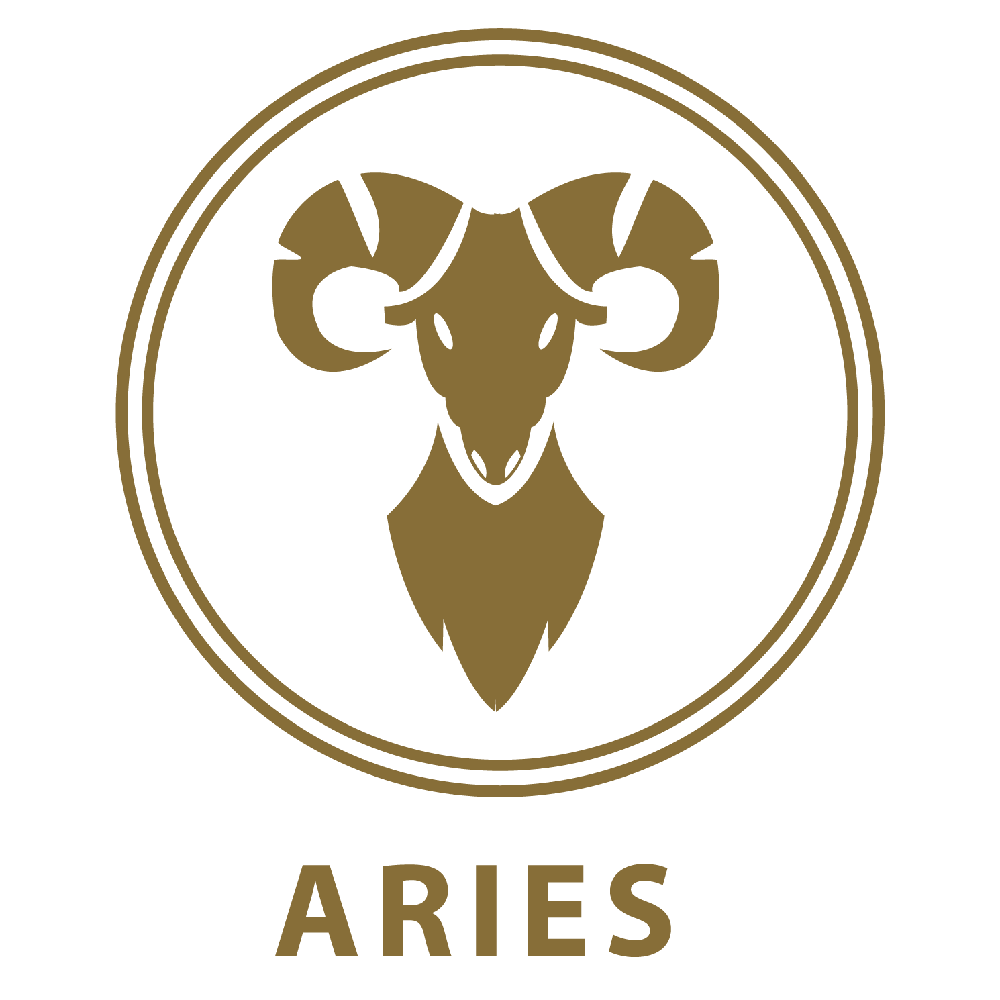

Los Libra son bastante compatibles con Aries, un signo opuesto al suyo. Aunque estos dos signos pueden acercarse al mundo de maneras muy diferentes, son capaces de ayudarse mutuamente a desarrollar las cualidades que le faltan al otro.
La compatibilidad entre Tauro (Tierra) y Libra (Aire) no es muy alta. Para que la relación funcione, los dos signos deberán poner de su parte: necesitarán comprenderse mutuamente. Eso sí, ambos son amantes de los retos.
Géminis se encuadra dentro de los signos mutables del zodíaco, Libra hace lo mismo dentro de los cardinales, y su compatibilidad en la mayoría de los casos resulta muy alta. Son personas de características heterogéneas.
Cáncer se verá reconfortado con la personalidad positiva de Libra, para quien todos los obstáculos pueden superarse. Por su parte, Cáncer es suficientemente comprensivo como para tolerar los arranques de Libra y su proverbial terquedad.
Es muy alta. Estos dos signos comparten muchos puntos en común. Libra disfruta del amor y el estilo, mientras que Leo es brillante e intrépido. En el sexo comparten un romanticismo y una armonía especial que ninguno de los dos olvidará.

La compatibilidad entre Virgo (Tierra) y Libra (Aire) no es muy alta. Aun así, si ambos ponen de su parte podrían hacer que funcione la relación y crear una pareja muy equilibrada, ya que se pueden llegar a complementar.
Cuando Libra y Libra se enamoran, sentirán que su amor es para siempre. Libra es por naturaleza muy romántico y sensual, no podría encajar con nadie mejor que con otra persona del mismo signo porque se entenderán sólo con la mirada.
Aunque son dos signos opuestos, son muy complementarios y se darán cuenta de que cuando se juntan, son imparables. Nada más conocerse se sentirán atraídos el uno por el otro y serán capaces de forjar una relación muy buena tanto en el ámbito del amor
La compatibilidad de Libra y Sagitario, está basada en su buena combinación en todos los terrenos. Aun siendo bastante distintos, se complementan muy bien. Libra se basa en el amor y el estilo, la pureza de las formas y la perfección.
Pertenecen a las llamadas en Astrología relaciones por atracción conflictiva, pero aunque su nombre sea un tanto alarmante, significa que vibran con la misma intensidad aunque no necesariamente en la misma dirección.

La compatibilidad entre Libra (Aire) y Acuario (Aire) es muy alta. Nada más conocerse se sentirán atraídos el uno por el otro y serán capaces de forjar una relación muy buena tanto en el ámbito del amor, como en la amistad, como en el terreno laboral.
Como amigos, Libra y Piscis son muy compatibles, tanto por sus aficiones en común como por sus respectivas personalidades, muy similares en el fondo aunque externamente sean totalmente distintas.
.png)
.png)